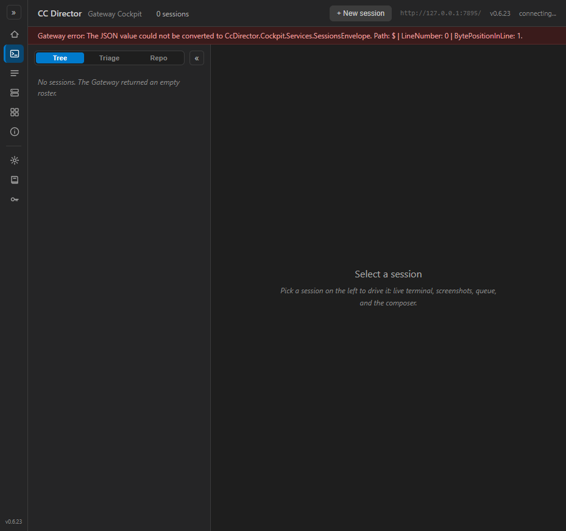
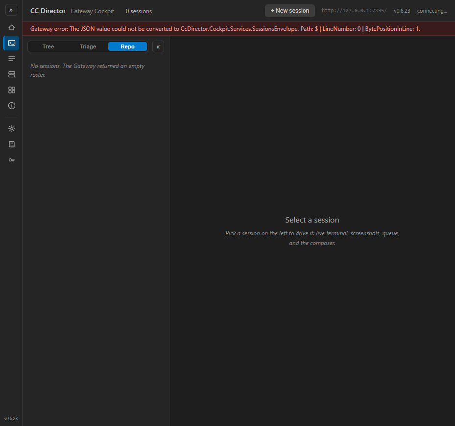
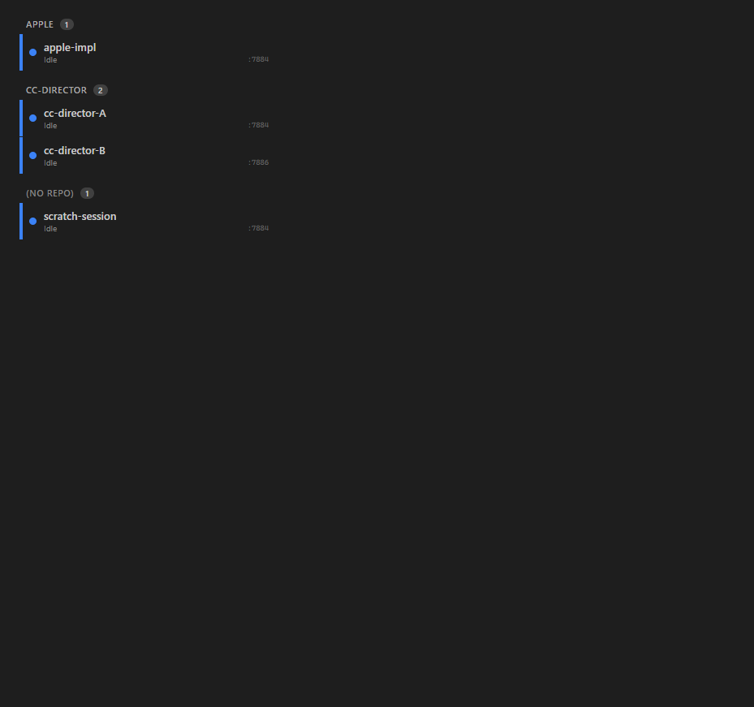
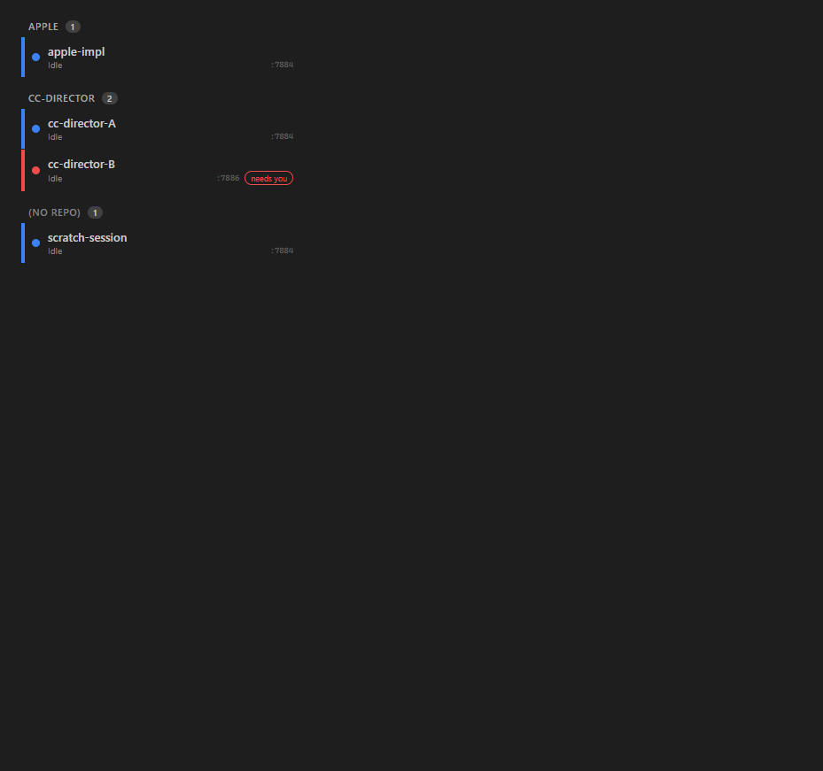

Default: Tree active, Triage and Repo present.

After clicking Repo: Repo is
vt-on, rail class rail repo.
After a full reload: Repo still active (cockpit.viewMode round-tripped "repo").
SessionOrdering.InRepoGroups(...) in
CcDirector.Gateway.Contracts, plus RepoName(...), the RepoGroup record,
and the NoRepoGroup constant. The repo key is the normalized RemoteRepo leaf
(trimmed, trailing .git dropped, case-insensitive) when present, else the leaf folder of
RepoPath - so the same repo on two machines coalesces. In-group order is
InDesktopOrder (stable, never reshuffles on a color change). The "(no repo)" group is
appended last. No inline LINQ in the view (#196 convention)."repo" branch in SessionRail.razor that iterates the
grouped output and emits a repo-head header + the existing shared SessionRow per
session.view-toggle in Cockpit.razor
(right of Tree/Triage), with the init-restore guard, the SetViewMode guard, and the
_viewMode comment all extended to accept "repo"; round-trips through the existing
cockpit.viewMode localStorage pref..repo-head / .repo-name / .repo-count mirroring the
triage-head treatment, and .rail.repo .sess-dir so each row shows its owning
Director short-id (as in triage, unlike tree which hides it).SessionOrdering unit tests + 6 new bUnit rail-render tests.| Criterion | Expected | Actual (proof) | Status |
|---|---|---|---|
"Repo" toggle button present, right of Tree/Triage, gets vt-on when active |
Three buttons Tree/Triage/Repo; Repo highlighted when selected | Live Cockpit shows Tree , Triage , Repo(ON); rail class rail repo (live-toggle-repo-active.png) | PASS |
Clicking "Repo" sets _viewMode="repo" and renders repo-grouped layout |
Rail switches to repo group headers | Click flipped vt-on to Repo and rail class to rail repo (live); group headers render (repo-view.png) | PASS |
| Exactly one header per distinct repo, alphabetical case-insensitive | Headers A before B before Z, no duplicates | APPLE, CC-DIRECTOR, (NO REPO) in order (repo-view.png); unit test InRepoGroups_HeadersAreAlphabetical_CaseInsensitive (apple<banana<zebra) | PASS |
| Within a group, desktop order; row does not move when only color changes | SortOrder order; a forced color change keeps the slot | cc-director-B (SortOrder 2) flips blue->red but stays below cc-director-A (repo-view.png vs repo-view-color-changed.png); tests RepoView_RowOrder_IsDesktopOrder_NotAffectedByColor, InRepoGroups_WithinGroup_UsesDesktopOrder | PASS |
Every row shows the owning Director short-id (sess-dir visible) |
sess-dir shown as in triage, not hidden as in tree |
Rows show :7884/:7886 (repo-view.png); test RepoView_EachRow_ShowsDirectorShortId + CSS rule .rail.repo .sess-dir | PASS |
| Same repo on two machines/Directors under ONE header | One header, both sessions under it | CC-DIRECTOR (count 2) holds onA/MACHINE_A:7884 + onB/MACHINE_B:7886 (repo-view.png); tests InRepoGroups_SameRepoAcrossMachines_CoalescesIntoOneGroup, RepoView_SameRepoAcrossMachines_UnderOneHeader | PASS |
| Repo-less sessions under a single "(no repo)" group, after named repos | "(no repo)" rendered last | (NO REPO) group last (repo-view.png); tests InRepoGroups_NoRepoGroup_IsPlacedLast, RepoView_NoRepoGroup_RenderedLast | PASS |
Logic is a public static member on SessionOrdering, covered by new tests |
InRepoGroups + the four assertions, dotnet test green |
InRepoGroups public static; 25 Gateway.Tests pass (16 prior + 9 new) | PASS |
Repo view persists across reload (cockpit.viewMode round-trips "repo") |
After reload, Repo still active | localStorage cockpit.viewMode == "repo"; after full reload toggle restores to Repo(ON), rail rail repo (live-toggle-repo-after-reload.png) | PASS |
dotnet build cc-director.sln succeeds with no new warnings |
Build succeeded, 0 warnings, 0 errors | Full-solution build: Build succeeded. 0 Warning(s) 0 Error(s) | PASS |
The worktree Cockpit driven in a real browser. The "Repo" toggle is present right of Triage; clicking
it activates it (vt-on) and a full page reload restores it from localStorage. (The rail roster is
empty here only because this test harness points the Cockpit at a standalone Director, which returns a bare
session array instead of the Gateway envelope - the toggle/persistence path is unaffected; the populated rail
layout is proven below by genuine compiled-component renders.)

vt-on, rail class rail repo.
The real SessionRail component rendered (bUnit) with the real app.css, then
screenshot. Demonstrates alphabetical headers, cross-machine coalescing, per-row Director short-id, and
the no-reshuffle-on-color-change guarantee.


dotnet test outputSessionOrdering (CcDirector.Gateway.Tests):
Passed! - Failed: 0, Passed: 25, Skipped: 0, Total: 25 (16 prior + 9 new repo-grouping tests)
RepoName_PrefersNormalizedRemote_LeafCaseInsensitiveDotGitStripped
RepoName_FallsBackToRepoPathLeaf_WhenNoRemote
RepoName_NoRemoteNoPath_IsNull
InRepoGroups_HeadersAreAlphabetical_CaseInsensitive
InRepoGroups_NoRepoGroup_IsPlacedLast
InRepoGroups_WithinGroup_UsesDesktopOrder
InRepoGroups_SameRepoAcrossMachines_CoalescesIntoOneGroup
InRepoGroups_DoesNotMutateInput
SessionRailRepoView (CcDirector.Cockpit.Tests, bUnit - renders the real SessionRail):
Passed! - Failed: 0, Passed: 6, Skipped: 0, Total: 6
RepoView_OneHeaderPerRepo_Alphabetical
RepoView_NoRepoGroup_RenderedLast
RepoView_EachRow_ShowsDirectorShortId
RepoView_SameRepoAcrossMachines_UnderOneHeader
RepoView_RowOrder_IsDesktopOrder_NotAffectedByColor
EmitProofArtifact_WhenProofDirSet (emits the rendered-rail screenshots above)
No drift. No new SessionDto field and no Gateway/Director REST change - all data
(RepoPath, RemoteRepo, DirectorId, MachineName) already existed.
The change is client-side policy (Gateway.Contracts) plus a Cockpit-only view. No architecture_manifest or
security_profile change; no blocking security rule touched.